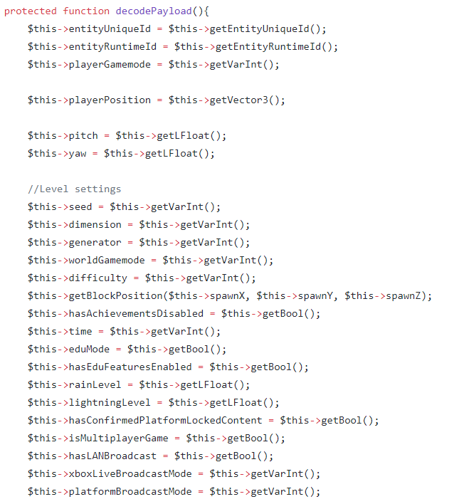
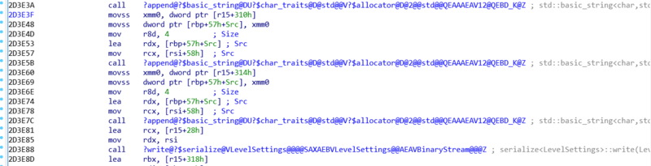

反汇编Minecraft基岩服务端，隐藏地图种子
文章目录
应广大MC玩家的呼声，Mojang官方放出了基岩版的服务端程序：https://www.minecraft.net/zh-hans/download/server/bedrock/ 然而坑爹的是服务端竟然直接把地图种子传给客户端显示，玩过minecraft的都知道，有了种子就可以为所欲为了，对于多人服务器，这还玩啥……
既然这样，只有用破解的方法，防止服务端程序发送种子给客户端。
IDA pro加载bedrock_server，反汇编 从minecraft pe protocol可以得知，seed是通过StartGamePacket数据包发给客户端的，不过对比PocketMine的代码StartGamePacket.php，好像PocketMine上的格式更加准确：

在IDA pro中找到StartGamePacket::write(BinaryStream &)函数，反汇编之后：

毫无疑问，种子信息就是通过serialize::write(class LevelSettings const &, class BinaryStream &)写入二进制流的，再找找这个函数的代码，结合PocketMine，关键点如下：
关键的一句就在这里了，现在要做的就是在这里写入一个假的种子，从而发给客户端。
通过查阅微软x86-64调用约定，可以知道
微软x64调用约定使用RCX, RDX, R8, R9四个寄存器用于存储函数调用时的4个参数(从左到右)，使用XMM0, XMM1, XMM2, XMM3来传递浮点变量。
从这里看，很明显，函数调用的前面两条add edx, edx和move rcx, rdi分别是32位种子的值以及this指针的地址，所以这里可以修改一下add edx, edx，将其改成xor edx, edx，也即把edx的值归零，这样就行啦。需要注意的是修改代码的时候，指令长度不能变。 patch一下exe，运行服务端，进游戏，成功隐藏种子：
对于Linux版本，步骤差不多，只是Linux的函数调用约定不同：
System V AMD64 ABI 此约定主要在Solaris，GNU/Linux，FreeBSD和其他非微软OS上使用。头六个整型参数放在寄存器RDI, RSI, RDX, RCX, R8和R9上；同时XMM0到XMM7用来放置浮点变元。
Linux版本对应位置的代码是这样的：
所以this指针应该放在rdi上，种子放在esi上，同样地把mov esi, eax修改成xor esi, esi。启动服务器，验证成功~
文章作者 Lianera
上次更新 2019年11月24日